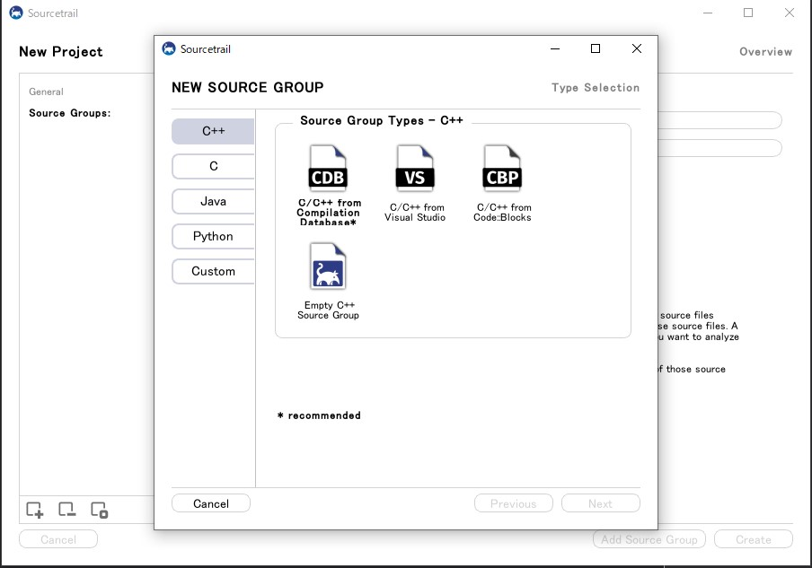

ソースコード検索エンジン Sourcetrail のOSS化
ソースコード検索エンジンのSourcetrailが無償化され、OSSとしてGitHub上で公開された模様
これは大きなプロジェクトのコードからデータベースを作って、依存性グラフなどの図や検索機能を提供して
コード検索や、実装の理解に役立つツールである
この類のツールはVisual Studioのクラスダイアグラム？だったかあるんだけど、Ultimateでしか使えなかったり
有料のものが殆ど。GNU Globalとかはマニアックな人は使ったことあるかもしれない。
知らない大規模プロジェクトでの作業はソースコードの理解や挙動の確認に90％近くの時間が取られてしまうので
こういったツールが無償になるのはとてもうれしい😊
ということで早速使ってみる。
リポジトリはGitHub
https://github.com/CoatiSoftware/Sourcetrail
OSSなので自分でビルドすることもできるが、今回はReleaseから
Sourcetrail_2019_4_61_Windows_64bit_Installer.zip
をインストールした
今回はC++のOSSであるJSON for Modern C++を使って解析してみる
(ちなみにこのライブラリは使ったことない😅)
とりあえず起動するとこんな感じ
New Projectを選択
Sourcetrail Project Nameに適当なプロジェクト名、
Sourcetrail Project Locationはプロジェクトの保存先を入れる。
そしたらAdd Srouce Groupを押して、

今回はC++のVisual Studioプロジェクトから使ってみたいので
JSON for Modern C++を落としてきて、CMakeでソリューションを生成する。
(ここらへんは脱線するので割愛)
C/C++ from Visual Studioを選択して、
この状態でソリューション(今回ならnlohmann_json.sln)を開いて、Create Compilation Databaseを押す。
Visual Studio側にこんなウィンドウが出てくるので、とりあえずDe/Select Allで全部のプロジェクトを選択 -> Createする。
オプションは大体デフォルトでいいけど、適宜変えてもよい。
ちなみに生成が終わると
というウィンドウが表示されるのでImportを押すとComplilation Databaseのパスを勝手にセットしてくれる。
Header Files & Directories to Indexは外部依存のヘッダーの取り込みをどうするか設定するのだが、
とりあえずcheck allで全部入れといて問題ない。
Nextすると追加されるので、Createを押す。
All filesを選んでStart。茶でも飲んで気長に待つ。
出来上がるとoverviewが表示されるので、あとは検索したりして遊ぶ。
検索が爆速でTypeやクラス検索が出来て便利。
構造も見やすく、クラスの場合は下が継承元、上が継承先、左が参照元、右が参照先…
という風に分かりやすく整理されている。